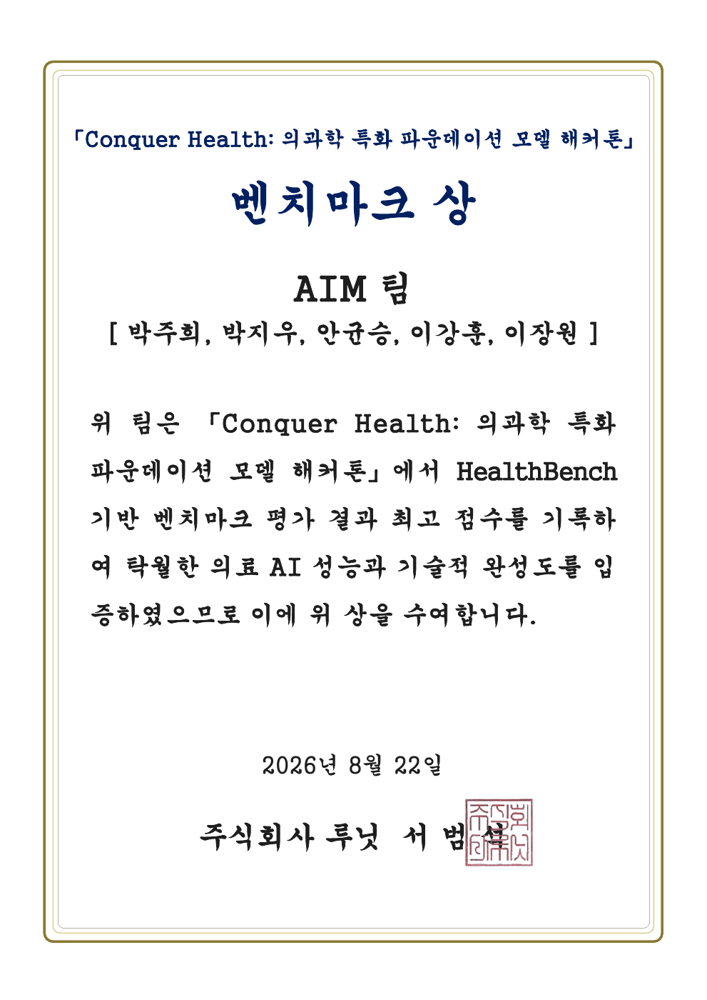

Conquer Health
의료 AI에 필요한 근거를 연결하고, 추론 흐름을 다듬다.
Measured.
Overview
의료 질문에 답하는 AI,
무엇을 기준으로 개선할까.
루닛의 의료 특화 파운데이션 모델 해커톤에서 L2-preview 기반 의료 질의응답 과제를 수행한 팀 프로젝트입니다. 제한된 시간 안에서 여러 접근을 비교하고, 의료 상담에 필요한 답변 요건을 응답 지침에 반영했습니다.
이 프로젝트는 모델을 새로 학습시키는 대신, 기존 모델의 응답을 개선하고 평가하는 데 초점을 맞췄습니다.
My contribution
MCP 연결을 실제 답변 경로로.
MCP 검색과 답변 생성을 연결하는 2단계 파이프라인, 약물 안전 게이트를 구현했습니다. 검색이 빠지거나 중복 실행되는 흐름을 점검하고, 확보한 근거에 없는 인용이 답변에 섞이는 문제를 다뤘습니다.
이후 선택적 MCP 근거 조회와 직접 생성 경로를 함께 실험했습니다. 모든 질문에 검색 단계를 더하기보다, 질문에 필요한 근거와 응답 시간의 균형을 찾는 데 집중했습니다.
- 근거 연결
MCP 도구 호출과 검색·생성 파이프라인 구성
- 안전 게이트
약물 안전 확인과 응급 응답 처리
- 출력 점검
잘못된 인용·검색 중복·응답 누락 검토
- 문맥 보강
멀티턴 대화에서 답변의 완결성 확인
멀티턴 대화에서 답변이 지나치게 짧아지는 현상을 분석하고, 최신 사용자 메시지의 지침을 보강했습니다. 이 문구 자체의 점수 개선 효과는 별도로 검증되지 않았으므로, 구현·관찰 내용과 팀의 최종 성과를 구분합니다.
What changed
필요한 근거만, 필요한 시점에.
팀은 직접 생성 경로를 기본으로 두고, 약가·허가 정보·의료 코드처럼 공식 데이터가 필요한 질문에 선택적으로 MCP 조회를 적용하는 방향으로 구현을 발전시켰습니다. 응답 지침과 토큰·시간 예산도 함께 조정했습니다.
HealthBench 기준에 따라 사용자의 요구를 빠짐없이 다루고, 위험 신호와 추가 확인이 필요한 정보를 답변에 담도록 공동 개선했습니다.
Team outcome
벤치마크상 수상.

| 평가 | AIM 팀 점수 |
|---|---|
| Round 1 | 46.17 |
| Round 2 | 45.55 |
| Round 3 | 47.82 |
| 최종 평균 | 46.51 |
위 수치와 수상은 팀 공동 성과입니다. 라운드별 점수는 최종 평가 결과이며, 특정 변경 하나의 개선 효과를 분리해 측정한 값은 아닙니다. 대회 평가 결과를 실제 의료 현장의 성능으로 일반화하지 않습니다.
Stack & evidence
Python / FastAPI / MCP / LLM API / HealthBench / Docker